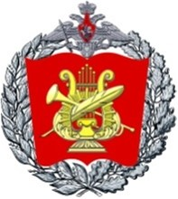

Главная
Биография
Творчество
Публикации
Контакты
Методические разработки

ИСТОРИЯ РАЗВИТИЯ КЛАВИШНЫХ ИНСТРУМЕНТОВ И ВЛИЯНИЕ ЕЕ НА ФОРТЕПИАННЫЙ РЕПЕРТУАР. МОСКВА 2022 год.
ИЗУЧЕНИЕ МЕЛИЗМОВ В ПРОИЗВЕДЕНИЯХ КОМПОЗИТОРОВ XVIII ВЕКА ПО ТРАКТАТУ К.Ф.Э. БАХА «ОПЫТ ИСТИННОГО ИСКУССТВА КЛАВИРНОЙ ИГРЫ». МОСКВА 2023 год.